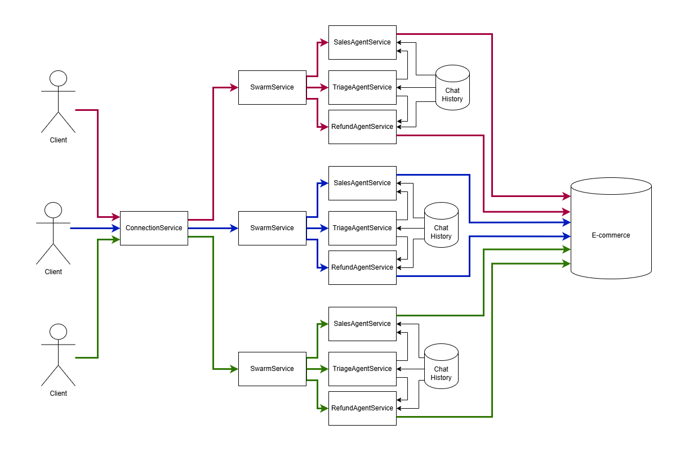

A TypeScript library for building orchestrated framework-agnostic multi-agent AI systems. Documentation available in docs folder

In comparison with langchain js this library provide the lightweight API so you can delegate the prompt engineering to other junior developers. It support message scheduling so user can interrupt the ai agent with additional details in few messages
npm install agent-swarm-kit
Several chatgpt sessions (agents) execute tool calls. Each agent can use different model, for example, mistral 7b for small talk, nemotron for business conversation
The agent swarm navigate messages to the active chatgpt session (agent) for each WebSocket channel by using clientId url parameter
The active chatgpt session (agent) in the swarm could be changed by executing function tool
Each client sessions share the same chat message history for all agents. Each client chat history keep the last 25 messages with rotation. Only assistant and user messages are shared between chatgpt sessions (agents), the system and tool messages are agent-scoped so each agent knows only those tools related to It. As a result, each chatgpt session (agent) has it's unique system prompt
If the agent output do not pass the validation (not existing tool call, tool call with invalid arguments, empty output, XML tags in output or JSON in output by default), the resque algorithm will try to fix the model. At first it will hide the previos messeges from a model, if this will not help, it return a placeholder like Sorry, I missed that. Could you say it again?
Passes validation when all dependencies are provided
Fails validation when swarm is missing
Fails validation when completion is missing
Fails validation when agent is missing
Fails validation when tool is missing
Fails validation when swarm's default agent is not in the list
Rescues model on non-existing tool call
Rescues model on empty output
Rescues model on failed tool validation
Failed rescue raises a placeholder
Navigates to sales agent on request
Navigates to refund agent on request
Avoids deadlock if commitToolOutput was not executed before navigation
Avoids deadlock when commitToolOutput is executed in parallel with next completion
Ignores execution due to obsolete agent
Ignores commitToolOutput due to obsolete agent
Ignores commitSystemMessage due to obsolete agent
Disposes connections for session function
Disposes connections for makeConnection function
Disposes connections for complete function
Uses different completions on multiple agents
Clears history for similar clientId after each parallel complete call
Orchestrates swarms for each connection
Queues user messages in connection
Allows server-side emit for makeConnection
import {
addAgent,
addCompletion,
addSwarm,
addTool,
changeAgent,
execute,
session,
} from "agent-swarm-kit";
const NAVIGATE_TOOL = addTool({
toolName: "navigate-tool",
call: async (clientId, agentName, { to }) => {
await changeAgent(to, clientId);
await execute("Navigation complete. Notify the user", clientId);
},
validate: async () => true,
type: "function",
function: {
name: "navigate-tool",
description: "The tool for navigation",
parameters: {
type: "object",
properties: {
to: {
type: "string",
description: "The target agent for navigation",
},
},
required: ["to"],
},
},
});
const ollama = new Ollama({ host: CC_OLLAMA_HOST });
const MOCK_COMPLETION = addCompletion({
completionName: "navigate-completion",
/**
* Use whatever you want: NVIDIA NIM, OpenAI, GPT4All, Ollama or LM Studio
* Even mock it for unit test of tool integration like it done in `test` folder
*
* @see https://github.com/tripolskypetr/agent-swarm-kit/tree/master/test
*/
getCompletion: async ({ messages, tools }) => {
return ollama.chat({
model: CC_OLLAMA_CHAT_MODEL,
keep_alive: "1h",
messages,
tools,
})
},
});
const TRIAGE_AGENT = addAgent({
agentName: "triage-agent",
completion: MOCK_COMPLETION,
prompt: "You are to triage a users request, and call a tool to transfer to the right agent. There are two agents available: `sales-agent` and `refund-agent`",
tools: [NAVIGATE_TOOL],
});
const SALES_AGENT = addAgent({
agentName: "sales-agent",
completion: MOCK_COMPLETION,
prompt: "You are a sales agent that handles all actions related to placing the order to purchase an item.",
tools: [NAVIGATE_TOOL],
});
const REDUND_AGENT = addAgent({
agentName: "refund-agent",
completion: MOCK_COMPLETION,
prompt: "You are a refund agent that handles all actions related to refunds after a return has been processed.",
tools: [NAVIGATE_TOOL],
});
const TEST_SWARM = addSwarm({
agentList: [TRIAGE_AGENT, SALES_AGENT, REDUND_AGENT],
defaultAgent: TRIAGE_AGENT,
swarmName: "navigation-swarm",
});
...
app.get("/api/v1/session/:clientId", upgradeWebSocket((ctx) => {
const clientId = ctx.req.param("clientId");
const { complete, dispose } = session(clientId, TEST_SWARM)
return {
onMessage: async (event, ws) => {
const message = event.data.toString();
ws.send(await complete(message));
},
onClose: async () => {
await dispose();
},
}
}));
The feature of this library is dependency inversion for agents injection. The agents are being lazy loaded during runtime, so you can declare them in separate modules and connect them to swarm with a string constant
addTool({
toolName: "test-tool",
...
})
addAgent({
agentName: "test-agent",
completion: "openai-completion",
prompt: "...",
tools: ["test-tool"],
});
addSwarm({
agentList: ["test-agent"],
defaultAgent: "test-agent",
swarmName: "test-swarm",
});
const { complete, dispose } = session(clientId, "test-swarm")
Agent Swarm Kit lets you build intelligent multi-agent systems where different agents can collaborate, execute tasks, and communicate seamlessly. Think of it like creating a team of specialized AI agents that can work together, share information, validate their actions, and track their interactions - all through a structured TypeScript framework. It's essentially a toolkit for creating complex, coordinated AI workflows where agents can execute commands, commit outputs, and maintain a history of their interactions.
Key Features:
Core Components:
Use Cases: